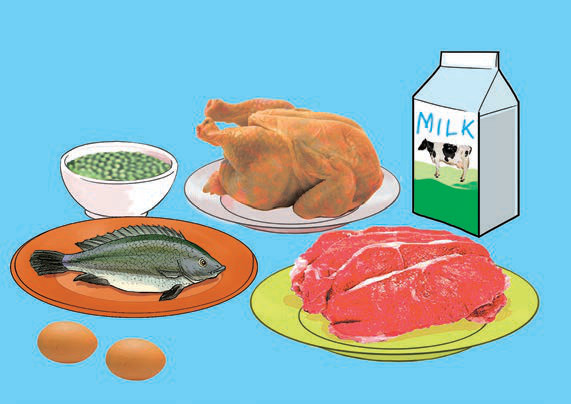

(a) Foods rich in carbohydrate

(b) Foods rich in fats
Figure 3: Foods rich in carbohydrates and fats
Body-building foods
Body-building foods are rich in protein. These foods include fish, milk, meat, eggs, beans and peas. They help build the body and promote proper growth. They also help make new cells to replace old or dead ones. Figure 4 shows/describes examples of body building foods.

Figure 4: Body building foods
Protective foods
Protective foods are rich in vitamins and minerals. These foods support overall body health and help the body defend itself against diseases. Also, they help build and strengthen the body’s muscles and bones. Vitamins and minerals are found in vegetables like cabbage, spinach, eggplant, amaranth